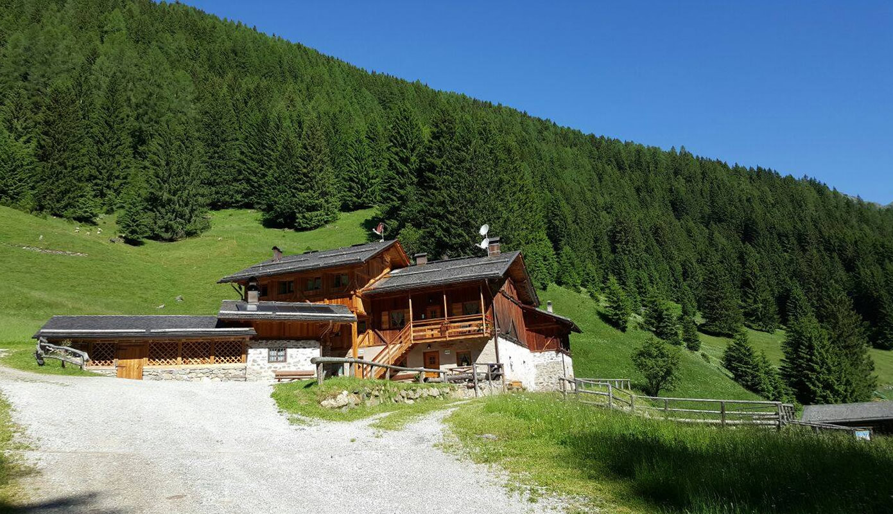
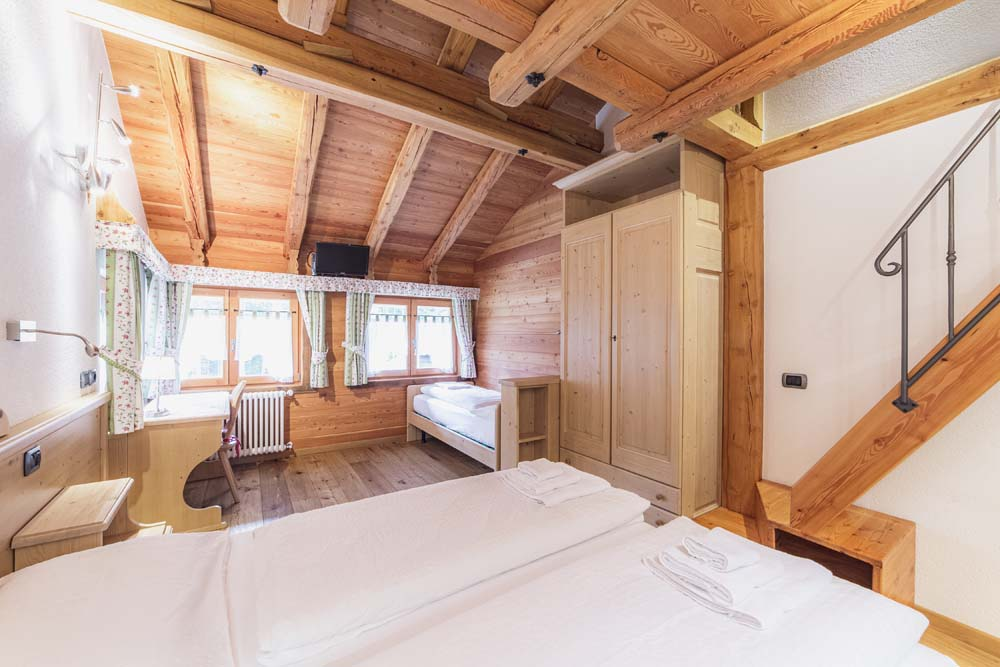
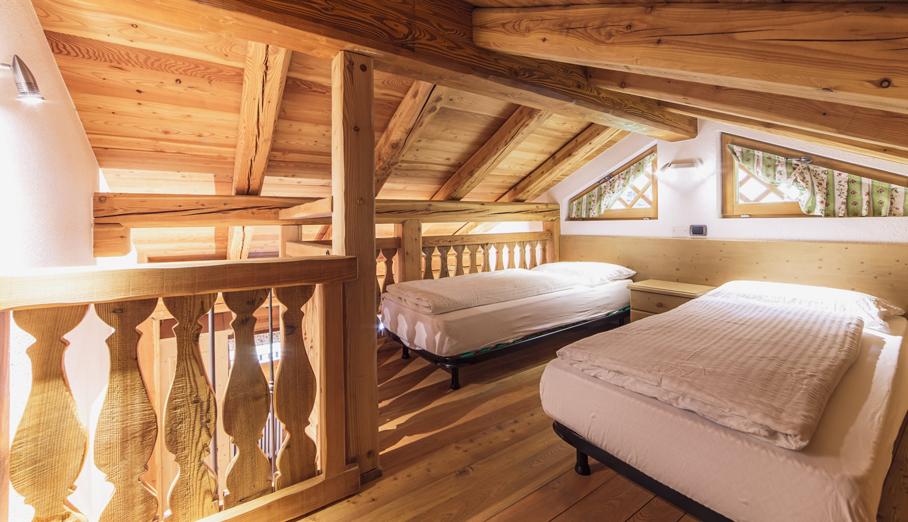
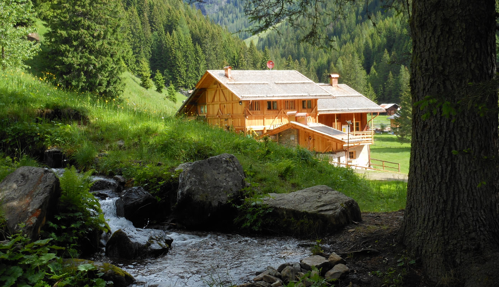

Camera doppia
- LETTO
- MATRIMONIALE
- BAGNO
- PRIVATO, CON DOCCIA
- ATTORNO
- LEGNO DI CIRMOLO

AGRITURISMO IN LEGNO E PIETRA NEL PARCO NAZIONALE DELLO STELVIO
L'INTERA STRUTTURA IN ESCLUSIVA: TRE CAMERE, NOVE POSTI LETTO
IL NOSTRO MESTIERE ▸ LASCIARVI IL MASO TUTTO PER VOI
IL MASO ⌾ MANIFESTO
MASO COLER È UN MASO IN LEGNO E PIETRA DELLA VAL DI RABBI: UN TEMPO FIENILE E STALLA DEI NONNI, OGGI AGRITURISMO DI FAMIGLIA, RISTRUTTURATO NEL 2012 SECONDO I CRITERI CASACLIMA.
SI PRENOTA SOLO PER INTERO: TRE CAMERE, NOVE POSTI LETTO, LA CUCINA A DISPOSIZIONE E NESSUN ALTRO OSPITE. LA SERA RESTANO IL RUSCELLO, IL BOSCO E UN CIELO PIENO DI STELLE.
NON È UNA VACANZA MORDI E FUGGI: SI ARRIVA OSPITI E SI RIPARTE CON IL PASSO LENTO DELLA MONTAGNA E IL PROFUMO DEL LEGNO ADDOSSO.
L'OSPITALITÀ ⌾ COSA VI ASPETTA
LA GIORNATA SEGUE IL SOLE: COLAZIONE, SENTIERI E SERE DAVANTI AL CAMINO, SENZA ORARI IMPOSTI.
IL MATTINO ⌾ LA COLAZIONE DEL MASO
LA RUOTA GIRA CON LO SCORRIMENTO ▪ FATTO IN CASA E DEL TERRITORIO, OGNI MATTINA
IL SONNO ⌾ TRE CAMERE, NOVE LETTI


LA VALLE ⌾ PARCO NAZIONALE DELLO STELVIO
UNA VALLE LATERALE E TRANQUILLA DELLA VAL DI SOLE: SI VIENE QUI PER CAMMINARE, NON PER FARE LA FILA.



LA POSTA ⌾ GESTIONE FAMILIARE
DITECI QUANDO VOLETE VENIRE E IN QUANTI SIETE: VI RISPONDE LA FAMIGLIA, NON UN CENTRALINO.
VERIFICATE LE DATELETTEREmasocoler@gmail.com
TELEFONO334 707 5738 ▪ ANCHE WHATSAPP
DOVEFRAZIONE PIAZZOLA 171/D ▪ RABBI (TN), VAL DI RABBI